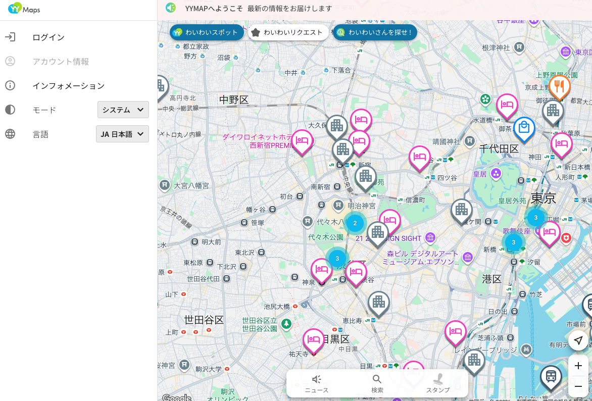
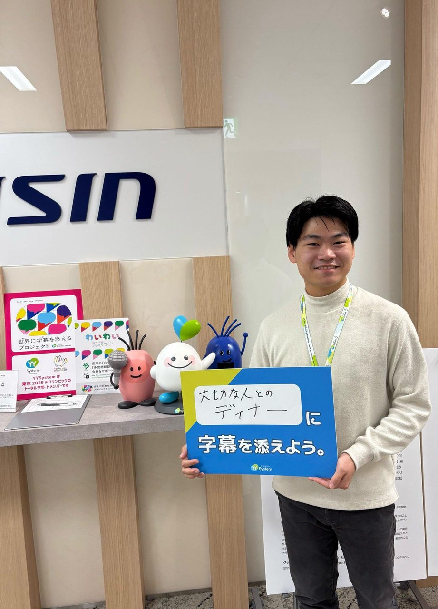
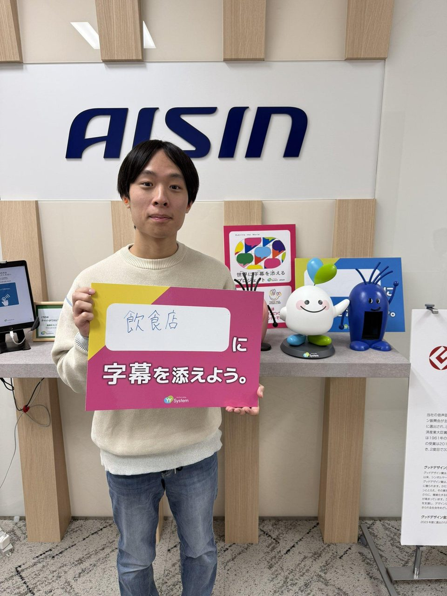
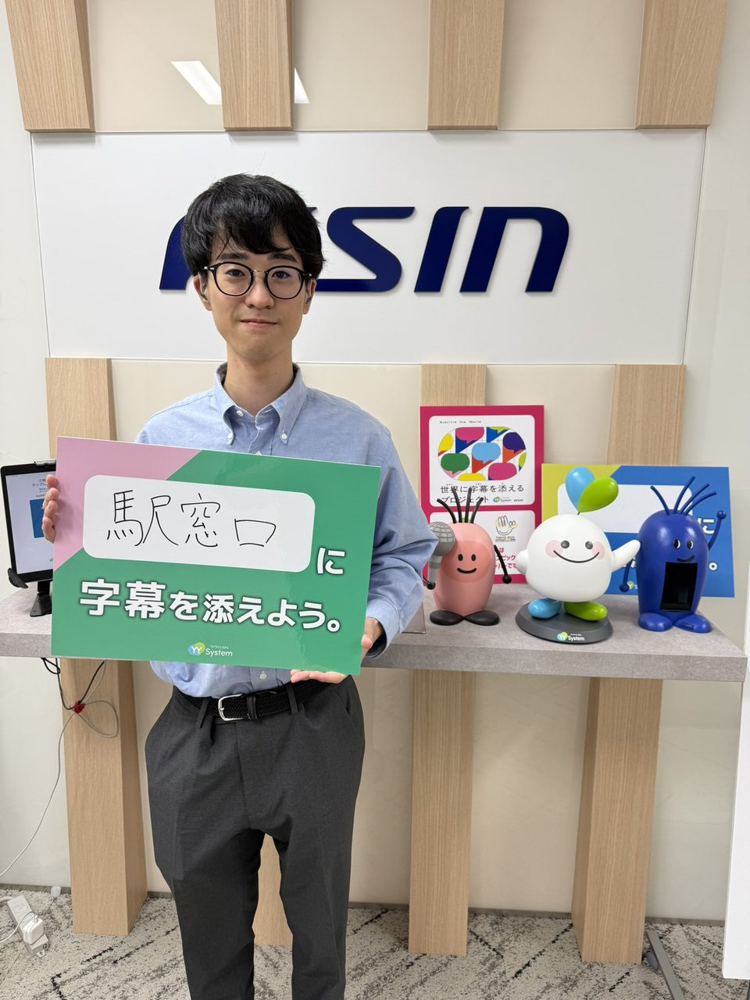
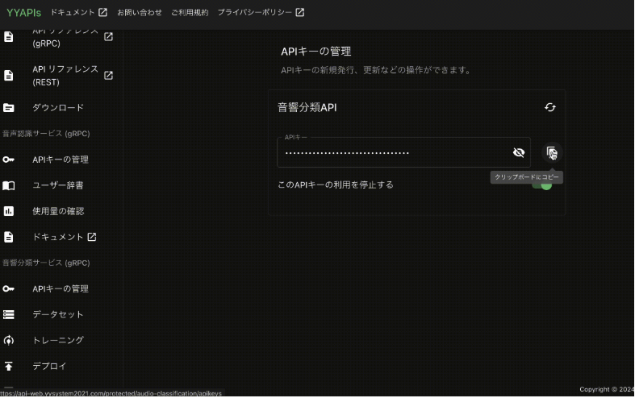

リアルタイム音声認識システムYYSystem開発チームへの参加

取り組みの概要
リアルタイム音声認識システムYYSystemは、多くの聴覚障害者が利用し、利用者からのフィードバックをもとにシステム改善をすることで評価を得ています。その開発チームに加わり、利用者視点に基づいた新しい機能提案やシステム設計・開発・運用に関わりました。
有償長期インターンシップとして実施し、YYMap・YYAPIsなど複数の新規機能リリースに貢献しています。
- 連携先
- YYSystem
- 期間
- 2024年7月〜
- 関わった学生の領域
- 情報系
- 主体教員
- 渡辺知恵美 教授
- 学生の関わり方
- 課外活動（長期インターンシップ）、契約社員（アルバイト）として
学生の学びと関わり
学生の学び
障害当事者視点を活かし、社会のソフトウエア開発チームに入って開発を実践できる。
学生の役目
ソフトウエアの企画及び設計開発。
求められた専門性
利用者視点を活かしたシステムの新規機能提案と、設計・開発・運用に至るソフトウエア開発の一連のプロセス。
連携先にとっての価値
利用者視点に基づく新規機能開発。
連携先担当者の評価
聴覚障害当事者としての視点を活かした提案や評価を行うとともに、新しい技術も自ら学びながら前向きに業務に取り組んでくれました。利用者の声を反映したソフトウェアの実装や、HP上の利用ガイド整理にも貢献しており、実践的な開発力と成長意欲を高く評価しています。連携先 ご担当者
活動の写真



